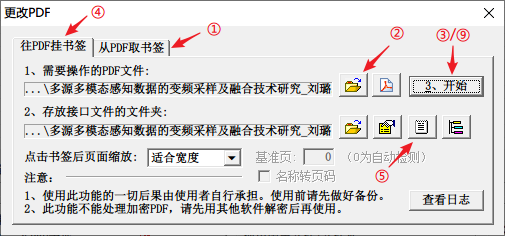
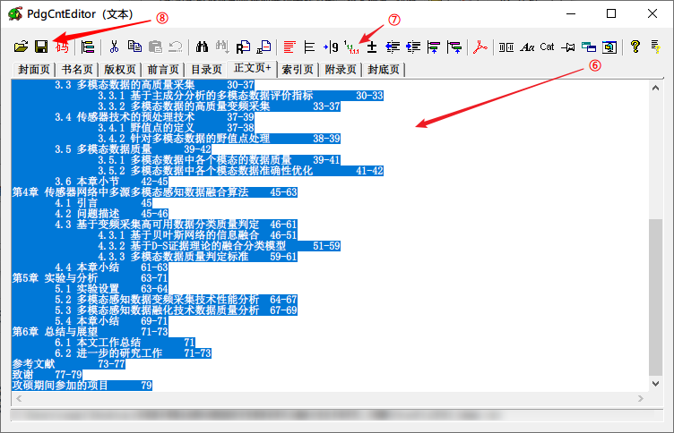
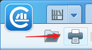
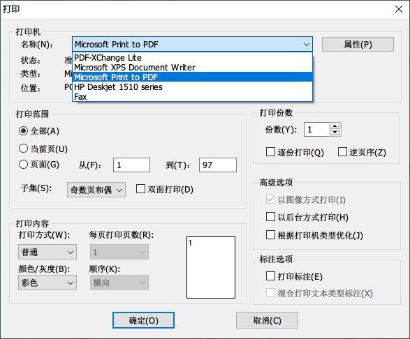

从知网（CNKI）下载 PDF 版文献
从知网下载过文献，特别是学位论文的小伙伴们肯定知道 CAJ 这个格式了。作为知网的专有格式，它的好处好像只是让知网能够把我们圈在它的 CAJ 云阅读软件里。但就算抛开这个软件的难用程度不提（其实我很少用啦，可能有人觉得好用，那就不是这篇文章的目标读者啦），PDF 作为一个更加通用的格式，在存储、分享等多个方面都远好于 CAJ（单单是在 Windows 里能显示缩略图就不知道比 CAJ 高到哪里去了）。
所以嘞，借此整理整理手头上能够从知网获得 PDF 文献的方法，顺便做一个分享，同时感谢各个方法的创始及维护人员，如果有动手能力强的同学可以直接看下面的简洁版——
简洁版
从知网获取 PDF 文献，除了知网直接提供 PDF 下载地址的文献外，目前我搜集到的还有几种获取方法：
- 通过脚本获取知网下载 PDF 的接口
建议适用：期刊/会议论文、对 PDF 目录无要求者
关键词：TamperMonkey/油猴，CNKI PDF Download
但这种方式下载到的 学位论文大多没有目录，所以下载学位论文建议使用第二种方法。
- 下载 CAJ 版本论文，转换为 PDF
建议适用：学位论文
关键词：CAJ2PDF
这种方式不是 100% 成功的，部分 CAJ 无法转换，如果不行的话建议使用第一种方式，配合挂载 PDF 目录的方法使用（将在下文详述）。
- 下载 CAJ 版本论文，打印为 PDF 版
建议适用：上述方法皆失效，且一定需要 PDF 版本
关键词：CAJ 云阅读，虚拟打印
这种方式打印出来的是 纯图片 PDF，无法选中文字等，属于实在没有办法后的下下之选。
方法1: 脚本获取 CNKI 隐藏 PDF 下载入口
原理
调用海外版的知网 PDF 下载接口 (http://new.oversea.cnki.net/index/) 进行下载
工具
步骤
- 安装好 TamperMonkey 和 CNKI PDF Download 脚本（可能需要科学上网）（Chrome 里是使用 TamperMonkey，其它平台我也没用过，只能自行查找相应插件了……）
- 打开知网论文页面，就会发现多了一个按钮——
- 还需要说么？点击下载吧！
但是这种方式下下来的论文大多是没有目录的，一方面强迫症受不了，另一方面有时候确实需要目录了解大致结构，前后跳转观看，所以只能再另行寻找方法了——
Bonus —— 为 PDF 挂载目录
既然没有目录，那就强行为它挂上目录吧！不过下面介绍的方法目录精度是以「页」为单位的，如果需要更高精度的，建议优先查看方法 2.
用到的工具是 FreePic2PDF，下好之后打开并点击右下角的「更改PDF」，能看到如下界面：

按照图上顺序点击「从PDF取书签」①，打开对应 PDF 文件 ②，点击「开始」③，就能够获取到一个书签目录，再切换到「往PDF挂书签」Tab ④，点击书签目录图标 ⑤ 即可看到如下界面，当然这时候是书签内容应该是空的，或者只有一个「?」。

那我们从哪里找书签呢——知网已经给我们预备好了。我们回到 PDF 的下载页面，点击分章下载按钮：
Ctrl+A 全选页面内容，复制——目录到手了！然后再去刚刚的软件页面把目录粘贴进去。同样 Ctrl+A 全选目录，点击自动缩进按钮 ⑦，保存书签目录 ⑧，关闭当前软件页面，回到一开始挂书签的地方，点击「开始」⑨，完成！
这时候打开 PDF，是不是已经有书签了！同时目录下还会有一个同名的目录，里面保存的是刚刚提取出来的书签目录，修改完毕后我们已经把该目录挂载到 PDF 里了，所以这个文件夹就可以删掉了~
刚才编辑书签的界面还有许多高级编辑的内容，有需求的话可以自己再探索探索~
总结一下方法就是——提取书签，挂载书签，格式化书签，保存书签，是不是 so~easy~
方法2: CAJ 转换为 PDF
如果手头上已经有 CAJ 文件了，或者觉得上面挂书签的办法太麻烦/精度不够的话，就可以试试直接转换 CAJ 的方法了！
在这里非常非常感谢 JeziL 提供的 caj2pdf 项目，无论是逆向分析还是实现转换的代码并开源给大家使用都让人各种膜拜！
并且在项目 Wiki 中提供了大神对 CAJ 格式的分析，有志于分析所有 CAJ 格式的大牛们可以去项目中继续讨论贡献！
原理
逆向分析 CAJ 格式并转换为 PDF，具体分析请见 caj2pdf 项目 Wiki。
环境/工具
右上角「Clone or download」点击「Download ZIP」，下载后解压即可
下载「mupdf-x.xx.x-windows.zip」，解压后把里面的「mutool.exe」拿出来放在 caj2pdf 的解压目录里即可
步骤
其实会用命令行的同学直接看项目里写的用法就可以了——
1 | # 打印文件基本信息（文件类型、页面数、大纲项目数） |
这里再稍微详细说明一下：
- 把要转换的 CAJ 文件放在 caj2pdf 目录下
- 在 caj2pdf 目录空白处按住 shift 键同时右击，选「在此处打开 PowerShell 窗口」
- 输入命令：
py -3 caj2pdf convert [要转换的 CAJ 名称] -o [转换成的 PDF 名称.pdf]，这里举一个例子：py -3 caj2pdf convert input.caj -o output.pdf - 回车！
- 如果转换成功的话目录下就会有对应的 PDF 文件了，当然如果提示失败的话…建议看看其它方法哦
这种方法生产出来的 PDF 个人认为是最完美的，除了——偶尔会失败以外。希望有更多的大牛能参与到这个项目中来~
方法3: CAJ 虚拟打印成 PDF
最后的最后，实在实在没有办法了，海外版知网都下不到 PDF，caj2pdf 也转换失败了，emmmmmmmm，如果没有特殊要求的话，其实知网的 CAJ Viewer/CAJ 云阅读 也不是不能用啦。
当然，这里提供最后的办法——如果你特别特别特别想要 PDF 的话。不过这种方法得到的是每个页面的图片，所以无法选择文字哦，当然相应的高亮啊下划线这种标注也不能用了。如果你还是特别特别特别想要知道的话——那就往下看吧。
原理
把 CAJ 文件虚拟打印成 PDF 格式，每页都会以图片形式“打印”。
工具
是的，我们还是要用回到知网自己的工具了。这里我用的是 CAJ 云阅读来做演示。
步骤
- 打开 CAJ，并点击打印按钮。在 CAJ 云阅读里，打印按钮在左上角非常显眼——

- 在跳出的窗口里选择虚拟打印机，一般 Windows 默认会有一个叫「Microsoft Print to PDF」，选它就可以了

- 调整调整格式（其实默认就可以了），点击「确定」打印！
是不是非常简单粗暴了，但这种方法本身就需要 CAJ 云阅读软件，所以如果不是一定要分享的话，其实不如直接看 CAJ 了，毕竟还能标注、看看大纲啥的不是。
尾巴
我不是方法的生产者，我只是方法的搬运工😂
前面给一圈脚本/方法贡献者点过赞了，最后还是要点赞下知网君，毕竟一切都是建立在我们能搜索到文献的基础上的~
也希望看到这篇文章的同学们学业有成，科研顺利（拱手
版本记录
2019/04/05 完成第一版